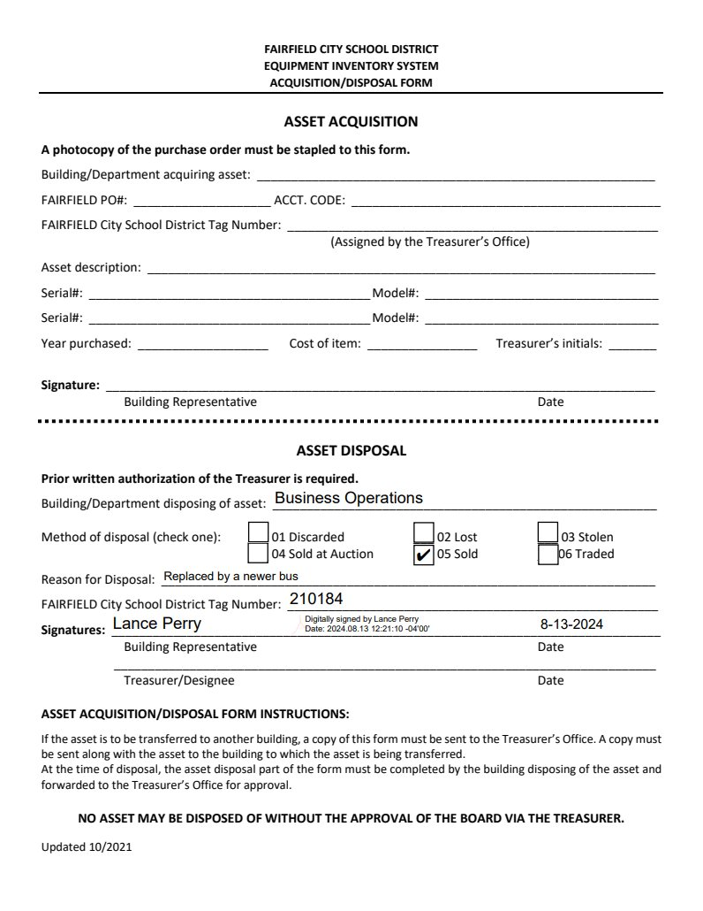

Source exhibit
210184.pdf
Source SHA-256: a62dcf4535161f01ac45ebf80392ad849ceb2782d3f4fa668046b2ebbd2d4329
Embedded form values
These values are embedded in the supplied PDF. They may be missed by plain-text extraction. Signature metadata is reported, not authenticated.
| Field | Value |
|---|---|
| BuildingDepartment disposing of asset | Business Operations |
| Reason for Disposal | Replaced by a newer bus |
| FAIRFIELD City School District Tag Number_2 | 210184 |
| Signatures 1 | Signature metadata: Lance Perry; D:20240813122110-04'00' (cryptographic validity not assessed) |
| Check Box5 | /Yes |
| Date 2 | 8-13-2024 |
Page 1

Extracted text · page 1
Updated 10/2021
FAIRFIELD CITY SCHOOL DISTRICT
EQUIPMENT INVENTORY SYSTEM
ACQUISITION/DISPOSAL FORM
ASSET ACQUISITION
A photocopy of the purchase order must be stapled to this form.
Building/Department acquiring asset: __________________________________________________________
FAIRFIELD PO#: ____________________ ACCT. CODE: _____________________________________________
FAIRFIELD City School District Tag Number: ______________________________________________________
(Assigned by the Treasurer’s Office)
Asset description: __________________________________________________________________________
Serial#: _________________________________________ Model#: __________________________________
Serial#: _________________________________________ Model#: __________________________________
Year purchased: ___________________ Cost of item: ________________ Treasurer’s initials: _______
Signature: ________________________________________________________________________________
Building Representative Date
ASSET DISPOSAL
Prior written authorization of the Treasurer is required.
Building/Department disposing of asset: ________________________________________________________
Method of disposal (check one): ___ 01 Discarded ___ 02 Lost ___ 03 Stolen
___ 04 Sold at Auction ___ 05 Sold ___06 Traded
Reason for Disposal: ________________________________________________________________________
FAIRFIELD City School District Tag Number: ______________________________________________________
Signatures: ________________________________________________________________________________
Building Representative Date
_______________________________________________________________________________
Treasurer/Designee Date
ASSET ACQUISITION/DISPOSAL FORM INSTRUCTIONS:
If the asset is to be transferred to another building, a copy of this form must be sent to the Treasurer’s Office. A copy must
be sent along with the asset to the building to which the asset is being transferred.
At the time of disposal, the asset disposal part of the form must be completed by the building disposing of the asset and
forwarded to the Treasurer’s Office for approval.
NO ASSET MAY BE DISPOSED OF WITHOUT THE APPROVAL OF THE BOARD VIA THE TREASURER.